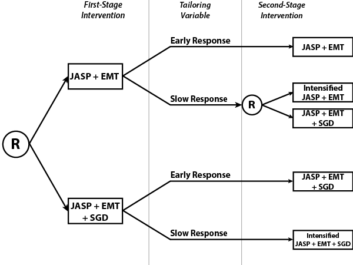

<!-- Modal -->
<div class="modal fade" id="exampleCmodal" tabindex="-1" data-width="760" aria-hidden="true">
  <div class="modal-dialog">
    <div class="modal-content">
      <div class="modal-header">
			<button type="button" class="close" data-dismiss="modal"><span aria-hidden="true">&times;</span></button>
			<h3 class="modal-title" id="exampleCmodalLabel">Example of SMART using Design III</h3>
		</div>
    <div class="modal-body">
		<p>
			We consider the
			<a href="http://methodology.psu.edu/ra/smart/projects/kasari-1" target="_blank">Adaptive Characterizing Cognition in Nonverbal Individuals with Autism Developmental and Augmented Intervention Study</a> (C. Kasari, P.I.).
			In this trial, nonverbal children with autism spectrum disorders (ASD) who have not made satisfactory progress by age 5 under traditional therapies.
		</p>
		<h4>Motivation</h4>
			<p>
				Children with ASD who do not make satisfactory progress by age 5 despite traditional therapies experience poorer longitudinal outcomes than verbal
				children with ASD. At the time of this study, there were no known efficacious interventions for such children. This motivated the use of a rescue
				treatment for slow responders to initial treatment.
			</p>
		<h4>Trial Components</h4>
		The interventions used in this trial are:
			<ol>
				<li> Joint attention/joint engagement (JASP), designed to facilitate coordinated joint engagement between the child and a social partner
				<li> Enhanced milieu teaching (EMT), which promotes functional use of language forms in interactions between parents and social partners
				<li> Speech generating device (SGD), which utilizes an "augmentative communication device" to facilitate communication.
			</ol>
		All children in the trial were given JASP+EMT, which was combined with EMT and SGD to form four possible interventions: JASP+EMT, JASP+EMT+SGD, and intensified
		versions of both.
		The tailoring variable was a composite measure on 14 variables (2 variables for each of 7 assessments). Response is gauged by change in these measures:
		"Early response" is defined to be at least 25% improvement in at least 7 variables. Children who do not meet this criterion are classified as "slow responders."
		Slow responders to JASP+EMT+SGD were not transitioned to JASP+EMT, since removing the communication device was deemed inappropriate.
		<div>
			 </img>
		</div>
		<h4>Embedded Adaptive Interventions</h4>
			There are three adaptive interventions embedded in the above design. They are
			<ol>
				<li> "Give JASP+EMT. If early response, continue with JASP+EMT; if slow response, intensify JASP+EMT."
				<li> "Give JASP+EMT. If early response, continue with JASP+EMT; if slow response, add SGD."
				<li> "Give JASP+EMT+SGD. If early response, continue with JASP+EMT+SGD. If slow response, intensify JASP+EMT+SGD."
			</ol>
		<h4>Outcome Measures</h4>
			Primary outcomes were three time-varying measures of communicative and expressive language abilities obtained from videos of child-mother interactions.
		<h4>References</h4>
		<ol>
			<li> Lei, H., Nahum-Shani, I., Lynch, K., Oslin, D., and Murphy, S. A. (2012), "A 'SMART' Design for Building Individualized
				Treatment Sequences," <em>Annu. Rev. Clin. Psychol.</em>, 8, 21-48.
			<li> Kasari, C., Kaiser, A., Goods, K., Nietfeld, J., Mathy, P., Landa, R., ... & Almirall, D. (2014). "Communication
				Interventions for Minimally Verbal Children With Autism: A Sequential Multiple Assignment Randomized Trial", <em>Journal of the American
				Academy of Child & Adolescent Psychiatry</em>, 53(6), 635-646.
		</ol>
	 </div>
      <div class="modal-footer">
		<a type="button" class="btn btn-primary" href="pdf/exampleDesignC.pdf" target="_blank">Print</a>
        <button type="button" class="btn btn-default" data-dismiss="modal">Close</button>
      </div>
    </div>
  </div>
</div>
<!-- /.modal -->
